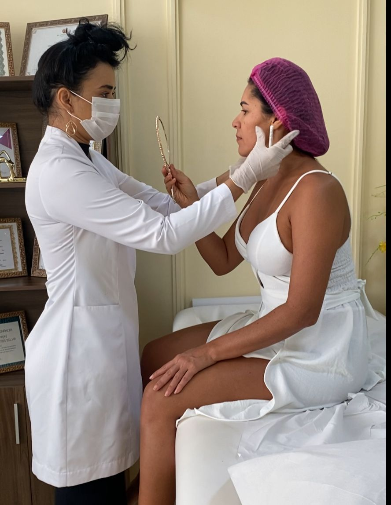
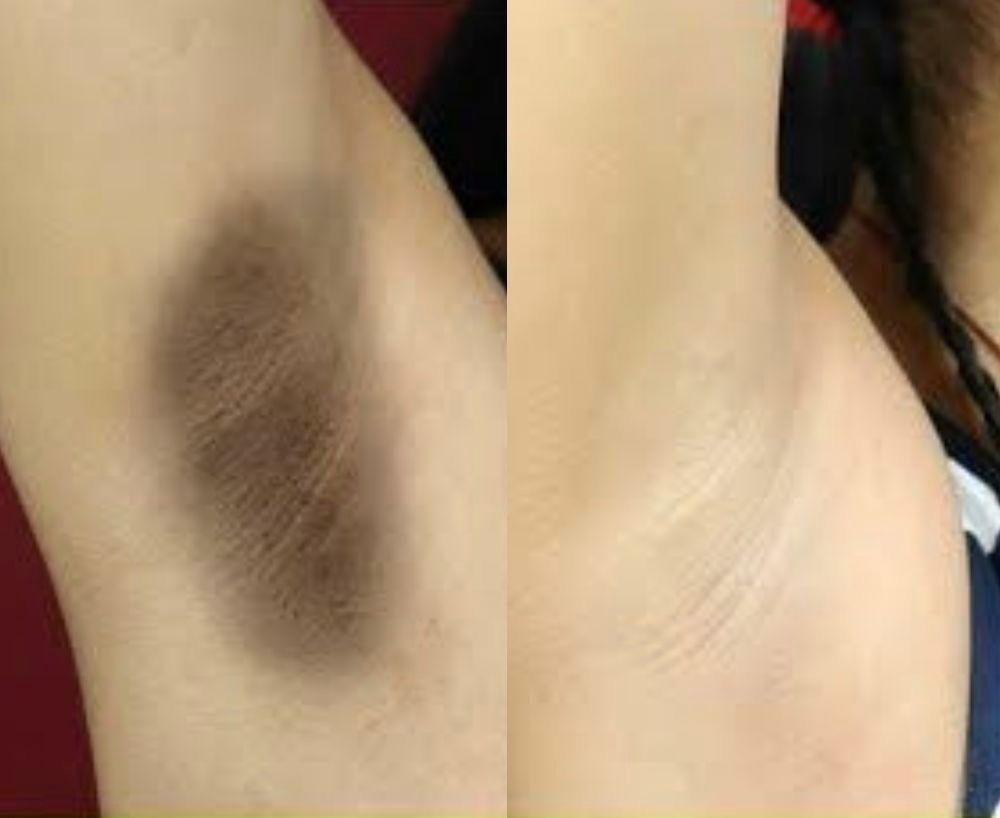
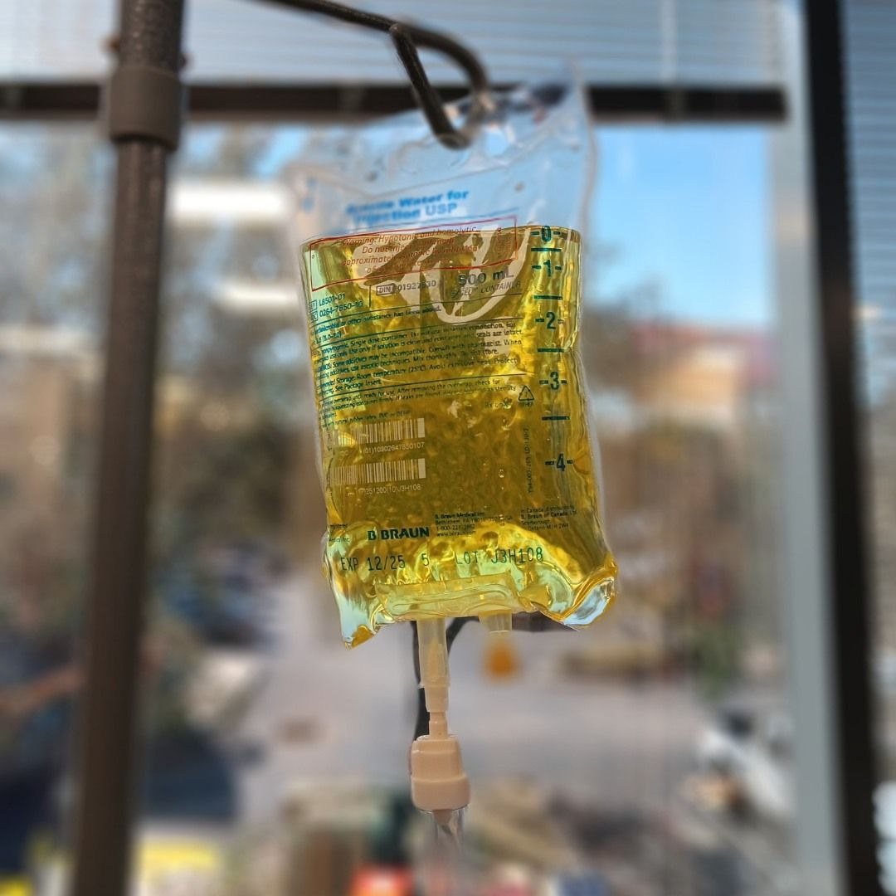
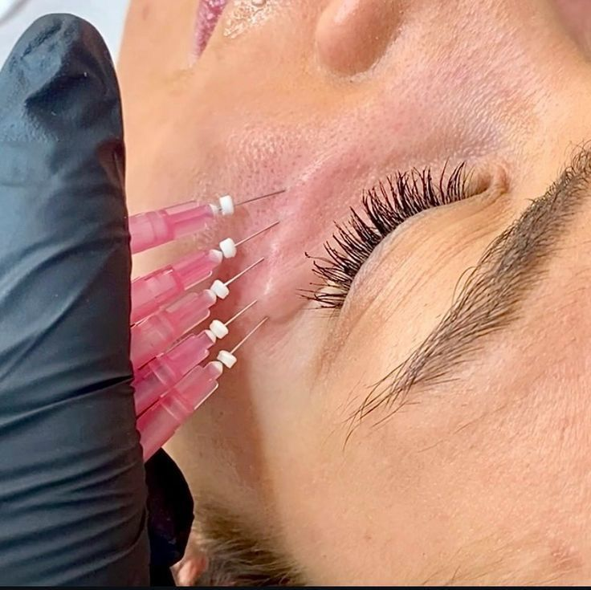
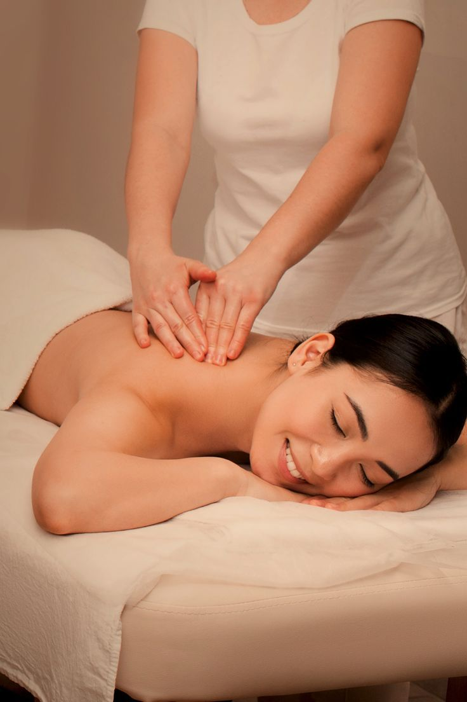

Procedimentos Estéticos e Tricológicos

Harmonização com Leveza e Segurança
Quando falamos em harmonização, menos é mais. Aqui, buscamos resultados naturais e suaves, respeitando a beleza de cada rosto — sem exageros. Utilizamos produtos aprovados pela Anvisa, biocompatíveis e absorvíveis, que oferecem segurança, leveza e harmonia real ao seu visual. O objetivo é realçar o que você já tem de melhor, com naturalidade e bom senso. ✨ Beleza com equilíbrio, feita para você se sentir bem — e não para parecer outra pessoa.
Gordura Localizada
Mais que estética, tratamos a gordura localizada de forma completa, cuidando do corpo de dentro pra fora. 🔹 Cortamos alimentos inflamatórios 🔹 Solicitamos exames para entender seu organismo 🔹 Corrigimos intestino e metabolismo 🔹 Usamos fitoterápicos e desparasitação natural 🔹 Aplicamos lipo não cirúrgica, drenagem, massagem e eletroterapias ✅ Redução de medidas ✅ Menos inchaço ✅ Corpo mais leve e saudável 📌 Sessões personalizadas conforme seu perfil. ✨ Agende sua avaliação e veja a transformação!

Depilação Definitiva + Clareamento com LYRA
Diga adeus aos pelos indesejados e às manchas causadas por métodos agressivos! Com o aparelho LYRA, você realiza a depilação definitiva e o clareamento da pele ao mesmo tempo. O tratamento é feito 1 vez por mês, com resultados visíveis desde a primeira sessão. ✅ Menos pelos ✅ Pele mais clara e uniforme ✅ Sessões rápidas e confortáveis 📌 A quantidade total de sessões varia de acordo com o seu organismo — por isso, cada tratamento é personalizado. ✨ Praticidade, estética e autoestima em um só protocolo. Agende sua avaliação e comece a transformação!
Tratamento Tricológico Integrativo
Na Tricologia Integrativa, não tratamos apenas os fios — tratamos o que está por trás da queda, oleosidade, caspa, coceira e doenças do couro cabeludo. 🔍 Avaliamos o paciente de forma completa: • Exames laboratoriais e biorressonância • Intestino, hormônios e alimentação • Carências nutricionais e toxinas 💊 Unimos saúde e estética com: • Suplementação individualizada • Detox natural e modulação alimentar • Tratamentos tópicos e terapias no couro cabeludo ✨ Resultado: fios mais fortes, couro cabeludo equilibrado e bem-estar de verdade. Agende sua avaliação e experimente um cuidado completo — de dentro pra fora.

Soroterapia Integrativa
Cansaço, queda de cabelo, imunidade baixa ou dificuldade para emagrecer? A soroterapia pode ser a solução que seu corpo precisa! 💧 Aplicamos nutrientes diretamente na corrente sanguínea, com fórmulas personalizadas para: • Aumentar a energia e a disposição • Fortalecer imunidade • Melhorar a saúde da pele, cabelos e unhas • Acelerar o metabolismo e auxiliar no emagrecimento • Reduzir estresse, ansiedade e inflamações ✨ Rápida, segura e eficaz, com ativos aprovados pela Anvisa e protocolos exclusivos. Recupere seu equilíbrio de dentro pra fora com saúde e vitalidade. Agende sua sessão!
Nutrição
Cuidar da sua alimentação é cuidar da sua saúde. Através de um plano alimentar personalizado, promovemos equilíbrio, bem-estar, mais energia e qualidade de vida. Alcance seus objetivos de forma saudável, seja para emagrecimento, ganho de massa ou saúde intestinal.
Alguns dos serviços que oferecemos

Musicoterapia
A musicoterapia utiliza a música como recurso terapêutico para promover o bem-estar físico, emocional e mental. Ela ajuda a reduzir o estresse, melhorar a concentração, aliviar sintomas de ansiedade e depressão, e estimular a comunicação e a expressão emocional. Indicada para todas as idades, a musicoterapia é eficaz no tratamento de transtornos neurológicos, problemas cognitivos e emocionais, além de auxiliar na reabilitação física. Fazer musicoterapia significa investir em uma abordagem acessível e comprovada para melhorar a qualidade de vida de forma natural e integrada.

Cicratizes de Acne
O tratamento para cicatrizes de acne visa restaurar a uniformidade e a saúde da pele, reduzindo marcas profundas, manchas e irregularidades deixadas pela acne. Por meio de técnicas como microagulhamento, peelings e ativos regeneradores, é possível estimular a produção de colágeno e renovar as camadas da pele. Indicado para todos os tipos de pele, esse cuidado melhora a textura, suaviza imperfeições e eleva a autoestima. Tratar cicatrizes de acne é investir em uma pele mais lisa, saudável e confiante, com resultados visíveis e duradouros.
Estrias Brancas
O tratamento para estrias brancas busca melhorar a aparência da pele estimulando a regeneração das fibras de colágeno e elastina. Utilizando recursos como microagulhamento, laser e ativos específicos, é possível suavizar a profundidade e a coloração das estrias, deixando a pele mais uniforme e firme. Indicado para diversas regiões do corpo, esse tratamento é eficaz na recuperação da elasticidade e na melhora da textura da pele. Cuidar das estrias brancas é investir em autoestima, beleza e bem-estar com resultados progressivos e naturais.

Fios de Colagenos
Os fios de colágeno são uma técnica inovadora utilizada para estimular a produção natural de colágeno na pele, promovendo firmeza, sustentação e rejuvenescimento. Aplicados de forma minimamente invasiva, eles ajudam a redefinir contornos, suavizar linhas de expressão e melhorar a flacidez. Indicados para o rosto e áreas corporais, os fios atuam de dentro para fora, proporcionando resultados progressivos e duradouros. Apostar nos fios de colágeno é escolher um tratamento moderno, seguro e eficaz para realçar a beleza com naturalidade.

Podologia
A podologia é o cuidado especializado com a saúde dos pés, tratando e prevenindo problemas como calos, rachaduras, unhas encravadas, micose, ressecamento e outras condições que afetam o bem-estar e a mobilidade. Com técnicas seguras e equipamentos adequados, o atendimento podológico promove alívio imediato e melhora a qualidade de vida. Indicada para todas as idades, a podologia é essencial tanto para cuidados estéticos quanto para a saúde, especialmente de pessoas com diabetes ou alterações circulatórias. Cuidar dos pés é garantir conforto, equilíbrio e saúde no dia a dia.
Fisioterapia
A fisioterapia é uma prática essencial para a prevenção e reabilitação de lesões, dores e disfunções do corpo. Por meio de técnicas manuais, exercícios terapêuticos e recursos tecnológicos, ela promove o alívio da dor, melhora a mobilidade, fortalece a musculatura e restaura a qualidade de vida. Indicada para pessoas de todas as idades, a fisioterapia é eficaz no tratamento de problemas ortopédicos, neurológicos, respiratórios e pós-cirúrgicos. Investir em fisioterapia é garantir uma recuperação segura, funcional e personalizada para viver com mais saúde e autonomia.

Massoterapia
A massoterapia utiliza técnicas de massagem terapêutica para promover relaxamento, aliviar tensões musculares e estimular o equilíbrio do corpo e da mente. Com manobras específicas, ela melhora a circulação sanguínea, reduz o estresse, combate dores crônicas e proporciona bem-estar imediato. Indicada para quem busca alívio físico e mental, a massoterapia é uma aliada no cuidado com a saúde de forma natural e eficaz. Cuidar do corpo com massoterapia é investir em qualidade de vida, relaxamento profundo e equilíbrio emocional.
Neuropsicopedagogo
O neuropsicopedagogo atua na identificação e intervenção de dificuldades de aprendizagem, considerando fatores cognitivos, emocionais e neurológicos que afetam o desempenho escolar e o desenvolvimento intelectual. Por meio de avaliações e estratégias personalizadas, esse profissional ajuda crianças, adolescentes e adultos a superarem obstáculos como déficit de atenção, dislexia, dificuldades de leitura, escrita e raciocínio lógico. O atendimento é individualizado e integrado, promovendo autonomia e melhora no rendimento. Investir em neuropsicopedagogia é oferecer suporte completo para o aprendizado e o desenvolvimento humano.